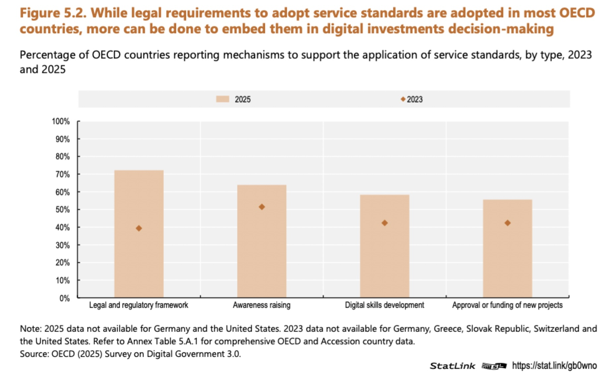

Policy debate topic: Road Safety for cyclists in London.
Data sourced from: UK Road Safety Statistics, table RAS0403, sheet Road_user_type. The metric is "KSI (adjusted)" (killed or seriously injured), with London as the region, from 2017.
As shown in this graph, there has been a significant increase in cyclists being killed or seriously injured in London.
Reported road casualties by road user type, comparing regions across Great Britain, 10 years up to 2025.
Original chart:

Recreated chart:
New chart:
https://api.worldbank.org/v2/
The data is returned as a ?format=json
"https://api.worldbank.org/v2/country/MW/indicator/SH.H2O.SMDW.ZS?format=json"
FULL API URL LINKED
The source used for this data is from World Population Review: World Population Review
This data provided the score and baseline of each country. Some countries had no score but were placed in the Category: 1 - Low (10%). To avoid assuming a country's water stress level without a score, I have filtered countries that did not have a score to appear as gray areas on the map.